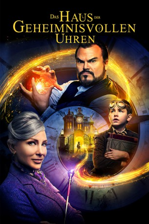

gesehen am 18.01.2019
gesehen am 18.01.2019Alternativ: The House with a Clock in Its Walls (Englischer Titel) gesehen am 18.01.2019
 
 IMDB-Wertung: 6.1 / 10
IMDB-Wertung: 6.1 / 10  Metascore:
Metascore: 
Nach dem Verlust seiner Eltern kommt der Waisenjunge Lewis Barnavelt bei seinem Onkel Jonathan unter, der sich als Hexenmeister entpuppt und die Hexe Mrs. Zimmerman zur Nachbarin hat. Gemeinsam begeben sie sich auf die Suche nach einer Uhr, welche vom Vorbesitzer des Hauses in den Wänden versteckt worden ist und die Kraft besitzt, die ganze Welt zu vernichten.
Jahr: 2018
Dauer: 105 Minuten
FSK: 6
Land: USA Studio: Universal PicturesTonspuren: DTS - ,
Untertitel:
Auflösung: 1080p (1920x808) Größe: 4976 MB
Genre: Thriller, Horror, Sci-Fi, Komödie, Fantasy, Familie, Mystery
Regisseur:  Eli Roth
Eli Roth
Drehbuch: Eric Kripke, John Bellairs
Soundtrack: Nathan Barr
Darsteller:
 Jack Black als Jonathan Barnavelt
Jack Black als Jonathan Barnavelt Cate Blanchett als Florence Zimmerman
Cate Blanchett als Florence Zimmerman Owen Vaccaro als Lewis Barnavelt
Owen Vaccaro als Lewis Barnavelt Kyle MacLachlan als Isaac Izard
Kyle MacLachlan als Isaac Izard Colleen Camp als Mrs. Hanchett
Colleen Camp als Mrs. Hanchett Lorenza Izzo als Mother
Lorenza Izzo als Mother Ricky Muse als Bus Driver
Ricky Muse als Bus Driver Charles Green als Soda Jerk
Charles Green als Soda Jerk Eli Roth als Comrade Ivan
Eli Roth als Comrade Ivan Sandy Givelber als Kate (uncredited)
Sandy Givelber als Kate (uncredited)Datei: X:\2018(G-M)\Haus der geheimnisvollen Uhren, Das (2018, FSK6, 1920x808).mkv seit 18.01.2019
Festplatte: HD 2018(G-Z)-2019(A-Z)
 Es gibt insgesamt 138 Filme in der Gruppe '2018(G-M)'
Es gibt insgesamt 138 Filme in der Gruppe '2018(G-M)'